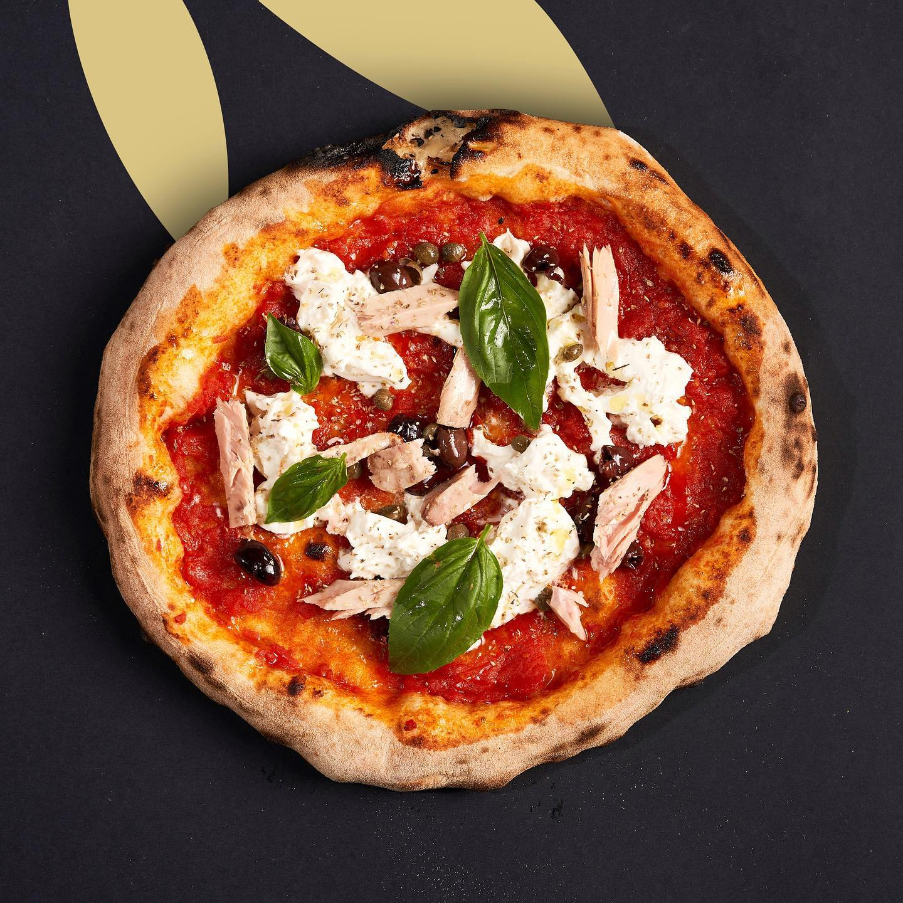
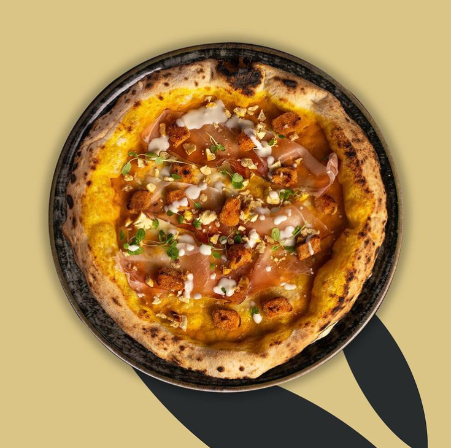
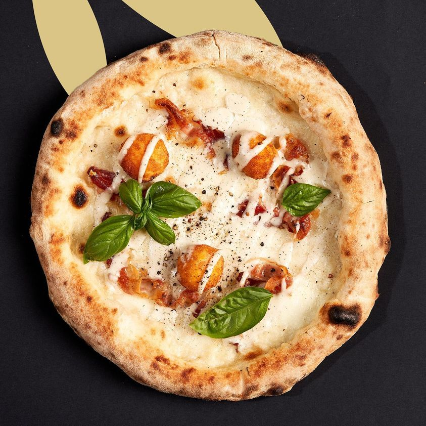
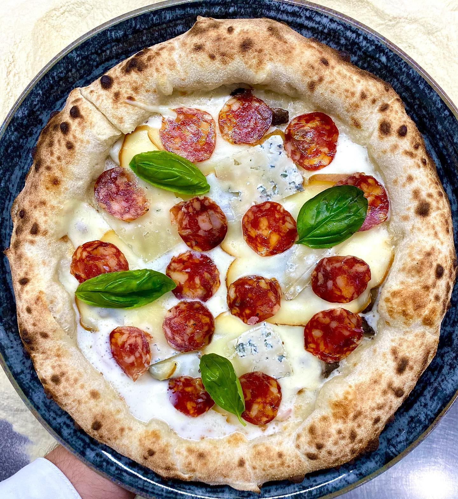
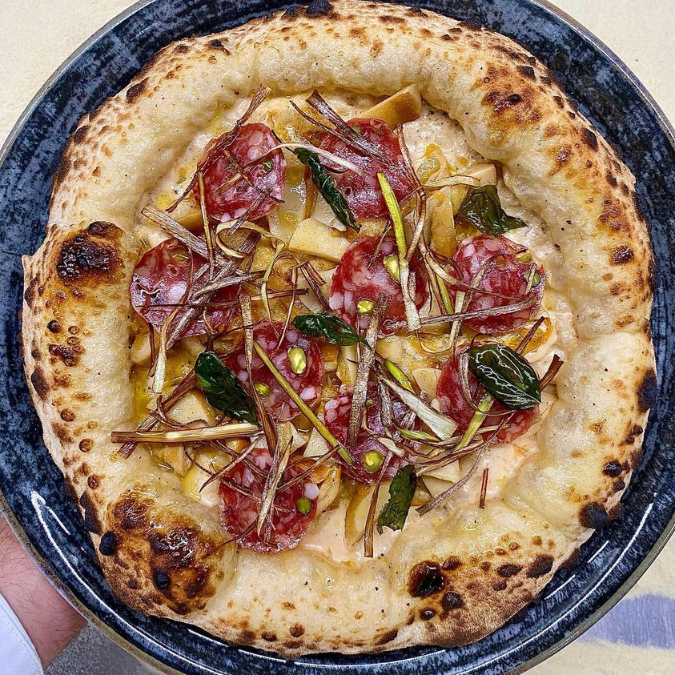
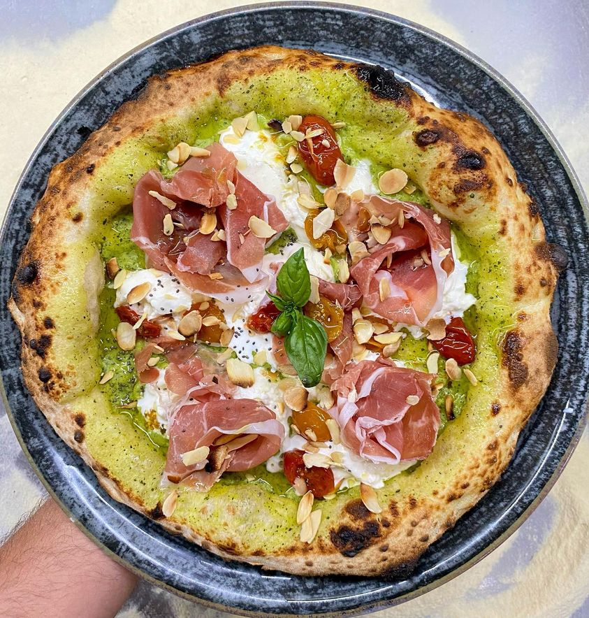

Le nostre specialità
Vieni a provarle!
Il gusto della tua pizza a 360°
Vuoi sapere come nascono le nostre pizze?Vieni a provarle!

Pelato siccagno di Valledolmo saltato in padella, stracciatella, filetti di tonno al naturale pinna gialla, capperi di Pantelleria, olive Taggiasche, olio EVO, origano, basilico.

Vellutata di zucca, fior di latte, dadini di zucca panata, speck di montagna artemano Levoni, fonduta di blu di bufala Quattro Portoni, granella di castagne, germogli.

Fior di latte, guanciale di suino Ragusano, tuorlo d'uovo fritto, fonduta di pecorino romano, basilico, pepe nero.

Bufala, blu di bufala Quattro Portoni, funghi tartufati, provola delle Madonie affumicata, salamino di suino nero piccante, vastedda della Valle del Belice DOP, olio EVO, Basilico.

Vellutata di zucca, fior di latte, funghi chiodini saltati in padella, capocollo di suino nero dei Nebrodi, pistacchio di raffadali olio evo basilico.

Crema di zucchine, stracciatella, prosciutto crudo di Parma 20 mesi, datterino semi dry gialli e rossi cotti a bassa temperatura, mandorle tostate.